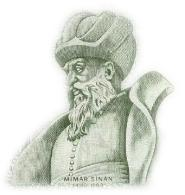

Mimar Sinan
Mimar Sinân Âğâ veya Koca Mi'mâr diye de anılan Sinan, Kanuni Sultan Süleyman dahil üç büyük Osmanlı padişahı döneminde yaşamış, dünyanın en büyük mimar ve yapı sanatçılarındandır. Mimar Sinan'ın, 1490'da Kayseri'nin Ağırnas köyünde dünyaya geldiği rivayet edilir.
Yavuz Sultan Selim' in hükümdarlığı sırasında başlatılan Anadolu'dan da devşirme alma uygulamasıyla yirmi iki yaşında devşirilmiş, İstanbul'a getirilmiştir. Zeki, genç ve dinamik olduğu için seçilen Sinan daha sonra ise o dönemlerde orduya asker yetiştiren Acemi Oğlanlar Ocağı'na yerleştirilmiştir. Burada eğitim alırken mimarlığa özenmiş, vatanın bağlarında ve bahçelerinde suyolları yapmak, kemerler meydana getirmek istemiştir. Acemi Oğlanlar Ocağı'nda dülgerliği öğrenen Sinan, yapı işlerinde çalışmış; bu çalışmalar sırasında da dönemin önde gelen mimarlarının yanında çalışma fırsatını da elde etmiştir.
1514'te Çaldıran Savaşı ve 1516 - 1520 arasında yapılan Mısır seferlerinden sonra, İstanbul'a döndükten sonra Yeniçeri Ocağı'na alınan Sinan, Kanuni döneminde, 1521'de katıldığı Belgrad ve 1522'deki Rodos seferlerine katılmıştır. Bu seferler sonunda sonra subaylığa yükselmiştir.
Daha sonra Mohaç Seferi başta olmak üzere birçok sefere katılan Sinan son Bağdat seferinde, Van Gölü'nün üstünden geçecek üç geminin yapımını başarıyla tamamlaması sonucunda, haseki unvanını almıştır.
1536'da Prut Irmağı üstünde yaptığı bir köprüyle dikkatleri üstüne çekerek, Yüksek Dergâh Mimarları Başkanı olan ve 1539'da, Mimar Acem Ali'nin ölümü üzerine onun yerine Saray Baş mimarı olan Sinan, ölümüne kadar bu görevi sürdürmüştür.
Osmanlı'nın en güçlü çağında yaşayan ve Kanuni Sultan Süleyman, II. Selim ve III. Murat olmak üzere, üç padişah döneminde mimarbaşılık eden Mimar Sinan, imparatorluğun gücünü simgeleyen mimarlık başyapıtlarının tasarlanıp uygulanmasında en büyük rolün sahibidir.
MİMAR SİNAN'IN TÜRBESİ
17 Temmuz 1588'de İstanbul'da öldüğünde ardından yüzlerce mimari eser bırakan Mimar Sinan'ın beyaz taşlı, sade bir yapı olan türbesi, Süleymaniye Külliyesi'ndeki, Haliç duvarının önündedir.
Türbenin önünde som mermerden yapılmış bir sebil görülmektedir. Sebilin arkasındaki ufak mezarlıkta 6 sütunlu, üstü örtülü ve etrafı açık türbede Mimar Sinan'ın mezarı bulunmaktadır. Türbesini ölümünden az önce kendisi yapmıştır. 1933 yılında restore edilen sandukanın uçları ile üzerindeki burma kavuk, mermerdendir.
Atatürk, eserlerinin etkisi ölümünden sonra da süren ve her dönemde saygınlığını koruyan Mimar Sinan'ın, bilimsel olarak araştırılmasını ve bir heykelinin yapılmasını istemiştir.
1982 yılında ise daha sonradan İstanbul Devlet Güzel Sanatlar Akademisi olmak üzere oluşturulan üniversiteye onun adı verilmiştir.
Mimar Sinan'ın Eserleri
Mimar Sinân Âğâ veya Koca Mi'mâr diye de anılan Sinan, Kanuni Sultan Süleyman dahil üç büyük Osmanlı padişahı döneminde yaşamış, dünyanın en büyük mimar ve yapı sanatçılarındandır. Mimar Sinan'ın, 1490'da Kayseri'nin Ağırnas köyünde dünyaya geldiği rivayet edilir.
Yavuz Sultan Selim' in hükümdarlığı sırasında başlatılan Anadolu'dan da devşirme alma uygulamasıyla yirmi iki yaşında devşirilmiş, İstanbul'a getirilmiştir. Zeki, genç ve dinamik olduğu için seçilen Sinan daha sonra ise o dönemlerde orduya asker yetiştiren Acemi Oğlanlar Ocağı'na yerleştirilmiştir. Burada eğitim alırken mimarlığa özenmiş, vatanın bağlarında ve bahçelerinde suyolları yapmak, kemerler meydana getirmek istemiştir. Acemi Oğlanlar Ocağı'nda dülgerliği öğrenen Sinan, yapı işlerinde çalışmış; bu çalışmalar sırasında da dönemin önde gelen mimarlarının yanında çalışma fırsatını da elde etmiştir.
1514'te Çaldıran Savaşı ve 1516 - 1520 arasında yapılan Mısır seferlerinden sonra, İstanbul'a döndükten sonra Yeniçeri Ocağı'na alınan Sinan, Kanuni döneminde, 1521'de katıldığı Belgrad ve 1522'deki Rodos seferlerine katılmıştır. Bu seferler sonunda sonra subaylığa yükselmiştir.
Daha sonra Mohaç Seferi başta olmak üzere birçok sefere katılan Sinan son Bağdat seferinde, Van Gölü'nün üstünden geçecek üç geminin yapımını başarıyla tamamlaması sonucunda, haseki unvanını almıştır.
1536'da Prut Irmağı üstünde yaptığı bir köprüyle dikkatleri üstüne çekerek, Yüksek Dergâh Mimarları Başkanı olan ve 1539'da, Mimar Acem Ali'nin ölümü üzerine onun yerine Saray Baş mimarı olan Sinan, ölümüne kadar bu görevi sürdürmüştür.
Osmanlı'nın en güçlü çağında yaşayan ve Kanuni Sultan Süleyman, II. Selim ve III. Murat olmak üzere, üç padişah döneminde mimarbaşılık eden Mimar Sinan, imparatorluğun gücünü simgeleyen mimarlık başyapıtlarının tasarlanıp uygulanmasında en büyük rolün sahibidir.